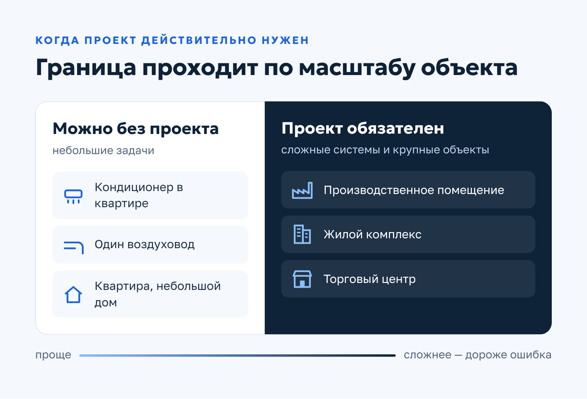
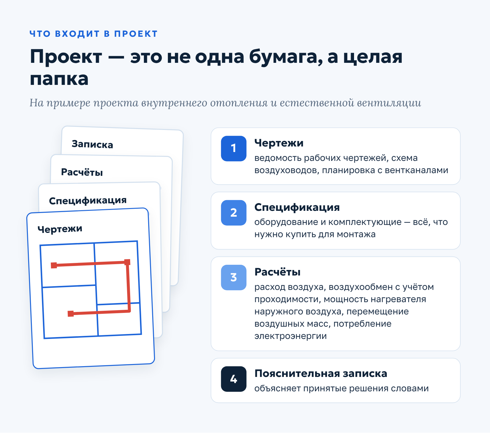
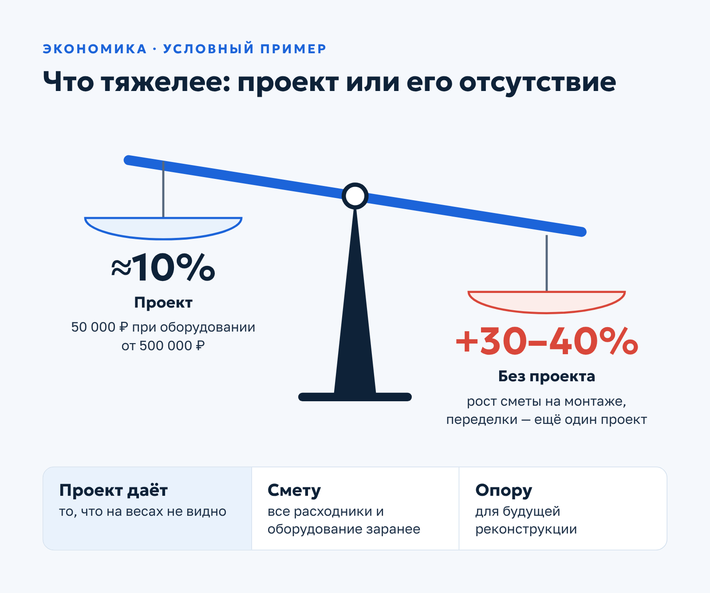
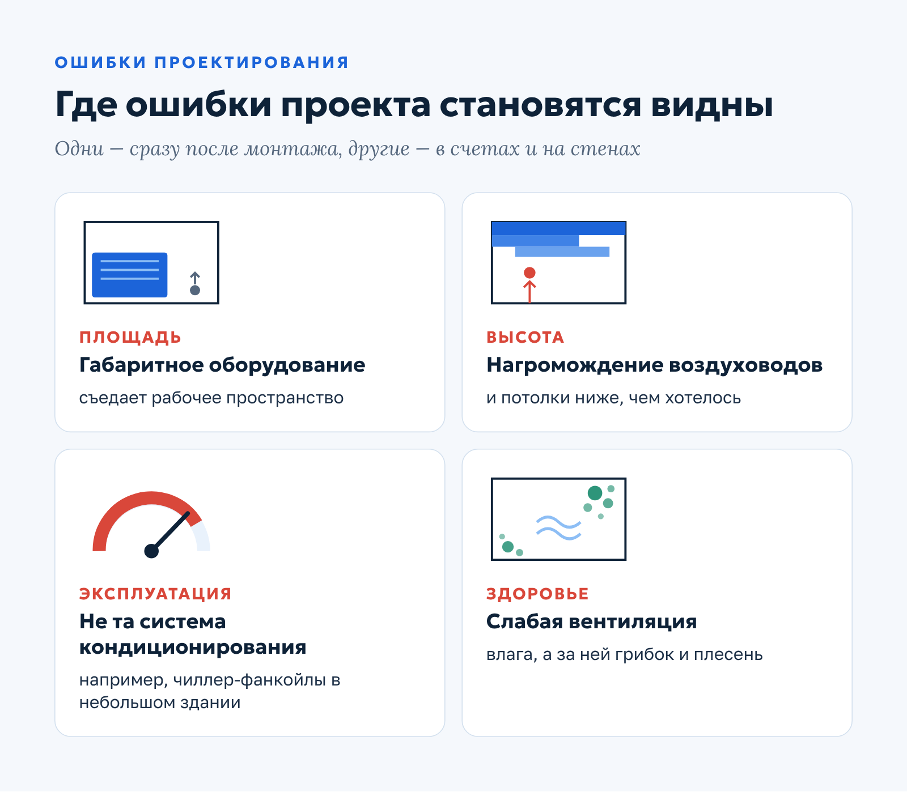

Qwent · Статья · контент-маркетинг
Статья для инженерной компании: обязателен ли проект вентиляции и кондиционирования
О заказчикеQwent — инженерная компания из Москвы (сайт ceds.ru): монтаж и обслуживание систем вентиляции и кондиционирования.
Задача
Убедить заказчика, что проект вентиляции и кондиционирования — не формальность и не лишняя статья расходов, а способ сэкономить.
Решение
Начала с узнаваемой привычки читать инструкции, только когда что-то сломалось, разобрала пять доводов за проект, состав документации, экономику на условном примере и типичные ошибки проектирования.
Результат
Опубликована в блоге Qwent в августе 2021 года. Статья подводит читателя к заказу проекта, а не только монтажа: на цифрах показывает, что проект обходится дешевле переделок.
Обязателен ли проект вентиляции и кондиционирования?
Историческая черта российского потребителя — пренебрежение ко всякого рода бумагам. Инструкции мы читаем, только когда что-то сломается, а строим нередко «на глазок», без проектной документации. Зачастую даже представитель строительной компании, предлагая клиенту проект при монтаже вентиляции и кондиционирования, не может внятно ответить на вопрос «Зачем он нужен?».
А ответ простой. Проект — это гарантия того, что цена не станет расти гомерическими темпами на этапе монтажа, когда выяснится, что что-то не учли, а смонтированная система будет эффективно работать и отвечать нормативным требованиям. В этой статье объясняем, почему проект вентиляции и кондиционирования важен и экономически выгоден.
Когда проект действительно нужен
Не будем лукавить: для небольших объектов — квартир, частных домов — составлять проект необходимости нет. Если же вы планируете оборудовать системой воздуховодов производственное помещение, жилой комплекс или торговый центр, проектно-сметная документация — необходимое условие.

Почему так? Доводов в пользу проекта пять, и почти все они так или иначе упираются в деньги и безопасность. Перечислим по пунктам.
- Точная стоимость. Мы хотим знать точную стоимость работ ещё при составлении сметы и расстраиваемся, когда цена в итоге вырастает на 30–40% и больше. Эту проблему решает проект. В него входит спецификация, где перечислены все необходимые расходники, материалы и оборудование. При монтаже не придётся бегать по магазинам, что-то докупать и подписывать с исполнителем дополнительные счета.
- Визуализация будущего результата. По проекту можно оценить, как будет выглядеть система вентиляции и кондиционирования, какие задачи она будет решать и насколько эффективно работать.
- Оптимальные решения для ваших задач. Именно проектировщики решают, какая схема вентиляции, кондиционирования или отопления будет лучше всего работать в конкретном помещении. Задача инженера — предложить оптимальное и эффективное решение.
- Безопасность. Это важнейшая категория при монтаже любых коммуникаций. Параметры безопасности рассчитывают инженеры и закладывают в проект, а задача монтажников — смонтировать систему так, как указано в документации. Полагаться только на их опыт, пренебрегая проектом, не стоит: слишком велики риски.
- Экономическая целесообразность. Компании, которые составляют проектную документацию, не заинтересованы в том, чтобы навязать клиенту неоправданно дорогое оборудование. С этим можно столкнуться, если заказать монтаж у не самых добросовестных подрядчиков.
Отдельно о выборе исполнителя: мы составили подробный гайд о том, как правильно выбирать компанию для монтажа инженерных систем, — рекомендуем к прочтению, если вы только начинаете поиски.

По опыту наших инженеров, большинство систем вентиляции и кондиционирования, смонтированных без проектной документации, со временем приходится корректировать из-за ошибок и нештатной работы. А стоимость таких «переделок» тянет ещё на один проект.
Что входит в проект
Документация систем вентиляции и кондиционирования содержит все схемы, планы и спецификации, необходимые для эффективного и качественного монтажа. Инженеры проектируют систему из соображений экономичности, надёжности и долговечности. Немаловажная задача — обеспечить вентиляцией помещения повышенной влажности: санузлы, кухни, бассейны.
Для примера — состав проекта внутреннего отопления и естественной вентиляции:
- ведомость рабочих чертежей основного комплекта;
- схема воздуховодов;
- планировка помещения с системой вентиляционных каналов;
- спецификация оборудования и комплектующих;
- данные по расходу воздуха;
- расчёт мощности нагревателя наружного воздуха;
- параметры перемещения воздушных масс;
- расчёты воздухообмена в зависимости от проходимости помещения;
- расчёт потребляемой электроэнергии;
- пояснительная записка.
Чертежи и схемы показывают, где и как пройдут воздуховоды, спецификация — что именно нужно купить, а расчёты объясняют, почему выбраны именно такие мощности и параметры. Вместе они отвечают на два главных вопроса заказчика: сколько будет стоить система и будет ли она работать.

Стоит предостеречь заказчиков от скачивания типовых проектов. Каждый проект выполняется индивидуально, с расчётом подвижности воздушных масс, объёма кислорода и CO₂, уровня влажности и температуры воздуха. С чужим проектом велик риск ошибок, которые приведут к дефектам системы или полной её неработоспособности.
Экономическая выгода проекта и риски без него
Зачастую заказчики считают, что проект только увеличивает и без того немалую стоимость работ, и с лёгкостью отказываются от него как от формальности. Составление проектно-сметной документации действительно стоит денег, но эти затраты несопоставимы с дальнейшими расходами на исправление ошибок.
Пример. Оборудование для систем вентиляции стоит от 500 000 рублей. Цена проекта — условные 50 000 рублей. Это грамотная финансовая инвестиция: по опыту наших инженеров, проект помогает сэкономить от 10 до 40% бюджета.
Вспомните первый довод: без проекта итоговая цена нередко вырастает на 30–40% и больше. На этом фоне 10% бюджета на проект выглядят не расходом, а страховкой.

Проект понадобится не только при монтаже системы, но и в дальнейшем, при её возможной реконструкции. И новая, и модернизированная сеть будет выполнять свои задачи, только если её спроектировали опытные инженеры с соблюдением действующих строительных норм.
Цена проекта не фиксированная и зависит от ряда факторов:
- функционал и назначение объекта (спа, бассейн, спорткомплекс, жилой дом, производство);
- характеристики (этажность, площадь, конструктивные особенности).
Чем грозят ошибки проектирования
Помимо названных выше рисков, ошибки при проектировании систем вентиляции и кондиционирования могут существенно повлиять на эффективность всей сети и сооружения в целом. Например, если проекты разных инженерных систем разрабатывают независимо друг от друга, это может привести к серьёзным просчётам.
Самые заметные последствия видны невооружённым глазом. Слишком габаритное оборудование сокращает рабочую площадь помещений, а из-за нагромождения воздуховодов потолки оказываются низкими.

Другие ошибки проявляются позже. Неудачно выбранная система кондиционирования делает эксплуатацию неоправданно дорогой — как, например, чиллер-фанкойлы в небольших зданиях. А вентиляция, которая плохо справляется со своей задачей, может привести к появлению грибка и плесени.
Чтобы не ошибиться ещё на старте, загляните в наш гид по системам вентиляции: в нём разобрано, что и как выбирать под ваш объект.
Заключение
Инженерные системы и сети — основа инфраструктуры любого объекта строительства, поэтому их проектирование — сложный, ответственный и трудоёмкий процесс. Ошибки, допущенные на этом этапе, оборачиваются серьёзными проблемами в работе всего здания, незапланированными затратами и неэффективной работой коммуникаций.
Проект стоит денег. Но его отсутствие почти всегда обходится дороже.